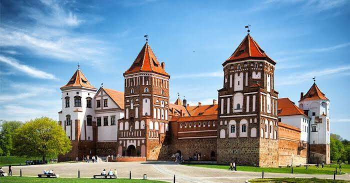

Ми́рский за́мок — оборонительное укрепление и резиденция в городском посёлке Мир Кореличского района Гродненской области Беларуси. Памятник архитектуры, внесён в список Всемирного наследия ЮНЕСКО (с 2000 года). Архитектурный комплекс включает в себя замок XVI—XX веков, валы XVII—XVIII веков, пруд 1896—1898 годов, часовню-усыпальницу Святополк-Мирских с домом сторожа и воротами, пейзажный и регулярный парки, дом управляющего. Находится в пгт Мир, на правом берегу реки Миранки.
Построенный магнатом в 1530-ых годах Ильиничем замок стал первым частнособственническим замком на землях Беларуси. С 1568 г. замком владели Радзивиллы (до 1828), потом Витгенштейны (до 1891). Последними владельцами замка были князья Святополк-Мирские (до 1939), после чего с приходом советской власти он стал государственной собственностью. Замок является самым восточным готическим сооружением, а также самым крупным и единственным не культовым объектом из немногих сохранившихся образцов самобытной белорусской готики.
Замок по строению похож на квадрат со стороной около 75 метров, по углам расположены пятиэтажные башни высотой 25—27 м, выходящиет за пределы стен. Пятая башня — шестиэтажная с въездными воротами.
Мирский замок для своего времени был мощным военным сооружением, где были применены почти все известные элементы Средневековой фортификации и были воплощены местные традиции замкового зодчества. Строили его по проекту талантливого архитектора, который, скорее всего, был мастером из народа и владел художественным вкусом. Отсутствие хороших приспособлений не помешало зодчему создать первоклассное для того времени военно-инженерное сооружение и украсить его разнообразными архитектурными деталями. Большая насыщенность огневых средств при взаимном перекрывании секторов обстрела, постановка башен с расчётом ведения флангового огня вдоль стен, высокие, крутые валы с бастионами по углам делали Мирский замок первоклассным оборонительным сооружением своего времени.
Комплекс участвовал практически во всех войнах, которые проносились в своё время на белорусской земле: начиная с русско-польской войны 1654—1667 гг. и до Отечественной войны 1812 года, замок не раз брали в осаду и штурмовали его. Был повреждён в 1665 и 1706 годах, после восстановлен в начале XVIII века. Впоследствии, замок снова был сильно повреждён в 1794 году. В 1812 под его стенами состоялся бой между польской кавалерией генерала Рожнецкого, входившей в состав французской армии, и арьергардом 2-й русской армии — казачьей конницей М. И. Платова.
На протяжении своего существования замковый комплекс в Мире неоднократно проходил восстановление и перестройку, однако данные процессы не внесли значительных изменений в его объёмно-плановую и композиционную системы. Вместе с тем, Мирский замок сохранил свои первоначальные стилистические элементы готики и Ренессанса, приобретя при этом новые уникальные напластования, характерные стилистике барокко и романтизма. Вместе с первоначальными стилевыми чертами они сформировали неповторимый облик замка, благодаря которому комплекс стал в один ряд с архитектурными памятниками Всемирного наследия. Мирский замок как один из самых узнаваемых замков Беларуси размещён на купюре в 50 белорусских рублей.
Все элементы замка составляют целостную архитектурную композицию, что создаёт завершённый комплекс неповторимого сооружения, которое не имело себе подобных на землях Прибалтики, Польши и России.
С 1989 года филиал Национального художественного музея Беларуси. В 2011 году получил статус самостоятельного музея.